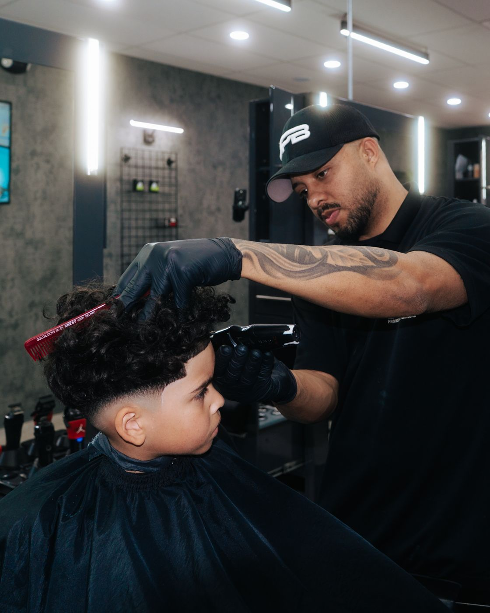

Fotógrafo en Kissimmee, FL
Fotos en Kissimmee, en español.
Fotos profesionales, fotos para tu negocio y video en Kissimmee. Sesiones en tu local, junto al lago Toho o en un estudio en Orlando, con toda la dirección en español.
Por qué Kissimmee
Una de las comunidades hispanas más grandes de la Florida Central.
Kissimmee vive del turismo, la hospitalidad y miles de pequeños negocios latinos: restaurantes, tiendas, oficinas de bienes raíces y de seguros, barberías y salones. Muchos atienden a sus clientes en español, y sus fotos tienen que hablarle a esa comunidad.
Por eso muchas sesiones en Kissimmee son en el propio negocio, para que los clientes vean el lugar real, y agregamos unas tomas junto al lago Toho para un look más cálido y abierto.
Servicios en Kissimmee
¿Qué necesitas?
Fotos profesionales
Headshots para LinkedIn, realtors, agentes de seguros y profesionales.
Fotos para tu negocio
Una sesión de marca personal en tu local, para tu web y tus redes.
Video para redes
Reels y videos de marca en español para tus clientes.
Dónde fotografiamos
Lugares en Kissimmee.
Lakefront Park
El lago Toho al amanecer o al atardecer, para retratos cálidos y abiertos.
Centro histórico en Broadway
Fachadas antiguas con carácter, ideales para fotos de negocios locales.
Tu negocio
Restaurantes, tiendas y oficinas, fotografiados donde tus clientes te conocen.
Estudio en Orlando
Fondos limpios y luz controlada, a unos minutos de Kissimmee.
Trabajo reciente
Profesionales y negocios de la Florida Central.

Reseñas en Google · 5.0 ★
Lo que dicen los clientes.
“Necesitaba una sesión de fotos de marca para mi negocio de bienes raíces. Me dio muy buenos consejos y consiguió un excelente estudio para nosotros. Es muy profesional y atento a cada detalle.”
“Mis headshots quedaron hermosos y estoy muy emocionada de volver a reservar. Gerson fue sumamente profesional y dio instrucciones claras para lograr las fotos perfectas.”
“GLPX Studio es, sin duda, el mejor fotógrafo de Orlando. Su ojo para los detalles, la luz y la forma de contar historias está a otro nivel.”
Reseñas originales en inglés, traducidas al español. Lee todas las reseñas en Google →
Preguntas frecuentes
Sesiones en Kissimmee.
¿Hacen sesiones en Kissimmee?
Sí. Las sesiones pueden ser en tu negocio en Kissimmee, en exteriores como Lakefront Park o el centro histórico en Broadway, o en un estudio rentado en Orlando.
¿Qué servicios ofrecen en Kissimmee?
Fotos profesionales y headshots, fotografía de marca personal para tu negocio, fotografía comercial, video para redes y cobertura de eventos.
¿Las sesiones son en español?
Sí. Toda la sesión puede ser en español, desde la llamada para planear hasta la entrega.
¿Cuál es la mejor hora para fotos en exteriores?
El amanecer y el atardecer en Lakefront Park, junto al lago Toho, dan la luz más cálida. Dentro de tu negocio llevo luces, así que cualquier hora funciona.
¿Cuánto cuesta?
Depende del tipo de sesión, cuántas personas y cuántos looks. Cuéntame en una llamada rápida y te mando la cotización en menos de 24 horas.
Siguiente paso